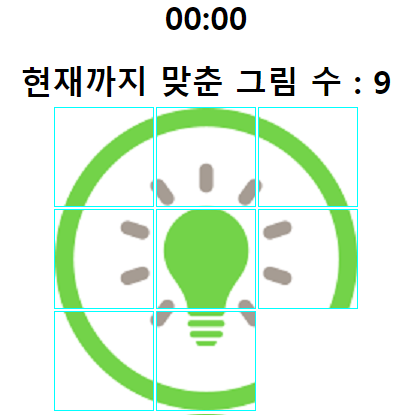
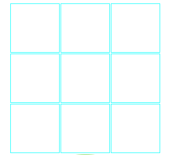
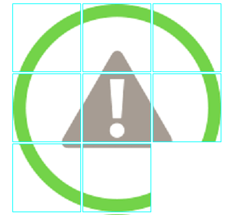

Project 1 - Puzzle Game

이번에 만들어 볼 게임은 Puzzle Game 입니다.
이 게임은 섞여있는 하나의 그림을 완전한 상태로 만드는 것이 목표인 게임 입니다.
입력값을 받아 보드판 만들기
( HTML )
( Javascript )
-
이중 반복문
Prompt 함수로 받은 n x n의 크기를 "number"로 지정한다. table 태그는 tr 태그로 묶인 td 태그로 한 개의 열을 구성하며
"number"의 값 만큼 "count" 값으로 세면서 이 값이 같을 때 tr 태그로 묶기 시작하고 값이 1 적을 때 /tr로 묶는 과정을
반복하여 그림이 들어갈 칸을 만든다.
-
document.querySelector()
DOM 트리의 텍스트, 속성노드까지 자유롭게 제어할 수 있게 해주는 메서드입니다.
id 또는, class 선택자를 이용하여 값을 출력할 곳을 정합니다.
-
innerHTML
Javascript에서 웹 요소의 내용을 수정 할 수 있게 해주는 프로퍼티입니다.
입력한 모든 요소들을 HTML에 태그를 반영하여 출력합니다.

주어진 사진을 랜덤하게 설정하기
( Javascript )
-
Math.Random()
Math 객체의 Random() 매서드는 a ~ b 까지의 값을 무작위로 배출합니다.
모든 사진의 id를 a ~ b 까지의 수로 지정하고, 무작위로 뽑힌 수가 table의 배경사진으로 출력됩니다.

배열을 이용하여 사진을 클릭했을 때 빈칸과 배경을 바꿔주기
( Javascript )
-
Array
배열의 값을 td의 수 만큼 만든다. 0번째 배열은 그림의 빈칸으로 지정한다.
-
if문 (빈칸 추적하기)
클릭한 td의 배열 값을 받고, 상하좌우 중에서 빈칸이 있는지 비교한다
각각의 칸들은..
1. 배열 값을 칸의 크기 값과 나누었을 때의 나머지가 0보다 클때
- id - 1은
""
자신이 지금까지 맞춘 그림의 개수와, 시간 알려주기
( Javascript )
-
setInterval()
게임을 시작할 떄 부터 1초씩 증가하며 초 단위는 60초가 될 때마다 00 으로 만들고,
분 단위에 1을 더해준다.
-
맞춘 그림 수
전체 배열의 값과 현재 id의 값이 같을 때 마다 수를 1씩 올려주며, 그 값이 같으면
게임을 종료한다.
Project 2 - MineSweeper

이번에 만들어 볼 게임은 MineSweeper 입니다.
이 게임은 지뢰를 피해 모든 땅을 파내는 것이 목표인 게임 입니다.
입력값을 받아 보드판 만들기
( HTML )
( Javascript )